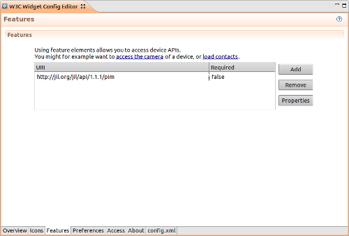

The Features shows features what will be used by a widget.
To add a feature:

More information about features can be found at Features - W3C Widgets Specification.
If you want to use WAC features, please refer to: WAC Widget Handset API.